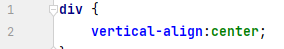
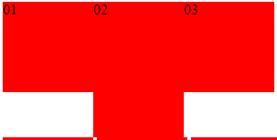

Opdracht 03
- De vertical-align:center zal geen effect hebben omdat hij niet weet hoe groot je div is. En dus niet weet waar het center van je div is.
- Vertical align houdt rekening met de lijnhoogte maar die is er niet dus daarom doet dit niks.

